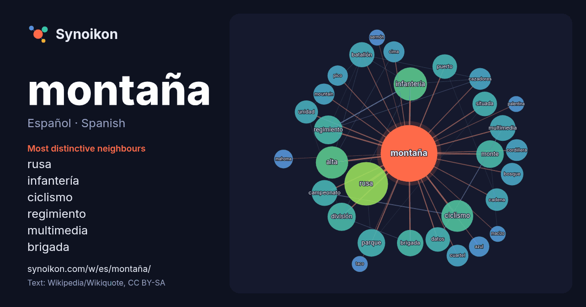

Español · Spanish · word of the day list
montaña
“mountain” · The words found around it in 1254 instances from Spanish Wikipedia, Wikiquote.

Most distinctive neighbours
- rusa 49×
- infantería 30×
- ciclismo 30×
- regimiento 22×
- multimedia 21×
- brigada 19×
- batallón 18×
- monte 17×
- alta 17×
- cazadores 15×
- cuartel 14×
- mountain 14×
- cordillera 14×
- parque 13×
- cima 13×
- cadena 12×
- mahoma 12×
- situada 12×
- datos 11×
- pico 11×
× = how many times more often than in general Spanish Wikipedia text.
Most frequent neighbours
- rusa 60
- infantería 35
- alta 33
- ciclismo 32
- regimiento 26
- división 25
- monte 24
- nombre 24
- parque 24
- brigada 22
- campeonato 21
- multimedia 21
- batallón 20
- san 20
- datos 19
- puerto 19
- situada 19
- españa 18
- unidad 17
- bosque 16
In context
- fundación de los clubes de montaña. La moda de la estancias en sanatorios de montaña y del hidrotermalismo, llevó a las montañas a las élites y, ya en el Wikipedia snippets · Montaña
- el territorio de La Montaña se identificó con la recién nacida provincia de Santander, por quedar encuadrada casi toda La Montaña en su territorio. En Wikipedia snippets · La Montaña
- abra para cruzar una montaña o cualquier clase de sistema montañoso. Este tránsito se realiza a través de una carretera de montaña, aquella que discurre Wikipedia snippets · Paso de montaña
- metros para los sistemas tropicales de montaña, 800 m para los templados y 600 m para los boreales. El clima de montaña se caracteriza por una menor temperatura Wikipedia snippets · Clima de montaña
- cerrado, en ese caso se habla de montaña rusa tipo shuttle, aunque algunos no la consideren como una montaña rusa. La montaña rusa debe su nombre a las diversiones Wikipedia snippets · Montaña rusa
- Bosque de montaña, o también bosque montano, es el bosque que se encuentra bajo la influencia del clima de montaña debido a su altitud. Es variable, en Wikipedia snippets · Bosque de montaña
- Las carreras de montaña es una disciplina de automovilismo y motociclismo que se disputa en recorridos cortos de puertos de montaña con pendientes elevadas Wikipedia snippets · Carrera de montaña
- Un refugio de montaña o albergue de montaña o cabaña de montaña es un edificio destinado a alojar y proteger de las inclemencias meteorológicas a alpinistas Wikipedia snippets · Refugio de montaña
More Spanish words
- agua
- arte
- bosque
- caballo
- camino
- campana
- canción
- ciencia
- ciudad
- clima
- comida
- corazón
- desierto
- dinero
- dios
- espejo
- estrella
- familia
- fuerza
- gato
- historia
- invierno
- isla
- jardín
- lengua
- lluvia
- madre
- mapa
- miel
- muerte
- naturaleza
- oro
- otoño
- pan
- perro
- puente
- reloj
- sal
- salud
- silencio
- sombra
- tiempo
- tormenta
- trabajo
- tren
- té
- verano
- verdad
- vida
Precomputed on 2026-10-09 with default settings (±5 words, medium corpus). The interactive map can refresh it with live data.